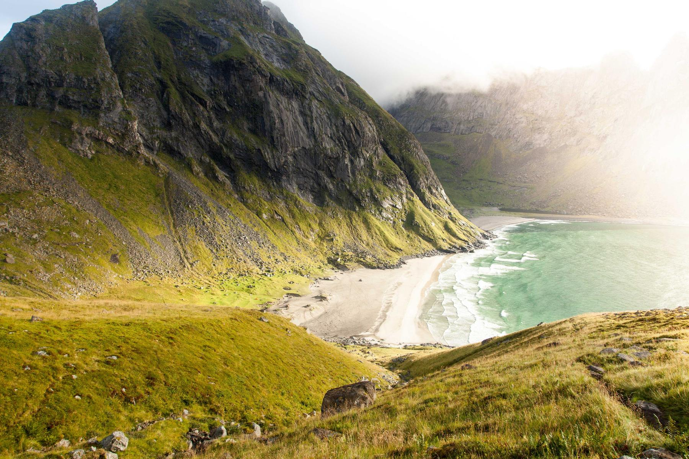
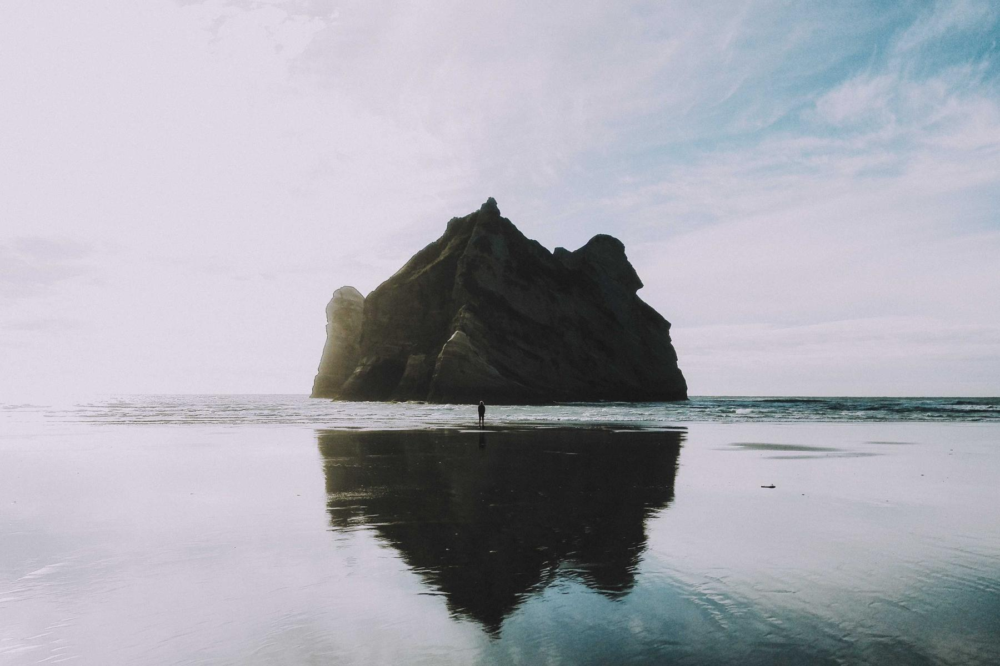

Give a still photograph motion
Northbound Studio previews a coastal photograph in the browser. Move the pointer to displace the water at a strength of 0.8.

- Strength
- 0.8
- Input
- Pointer movement
Coastal field notes
The study follows the waterline beneath the cliff. The foreground moves with the pointer while the original photograph remains visible on a phone.
